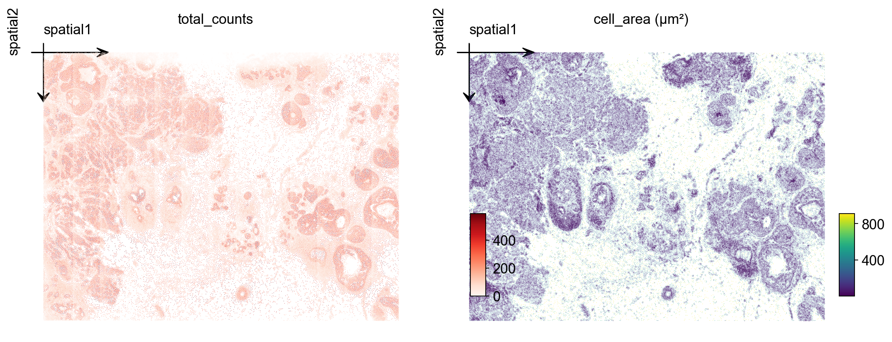
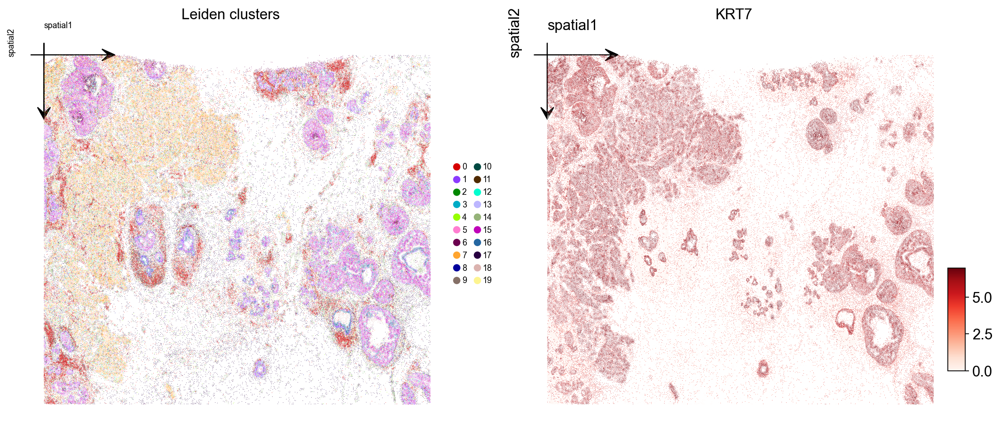
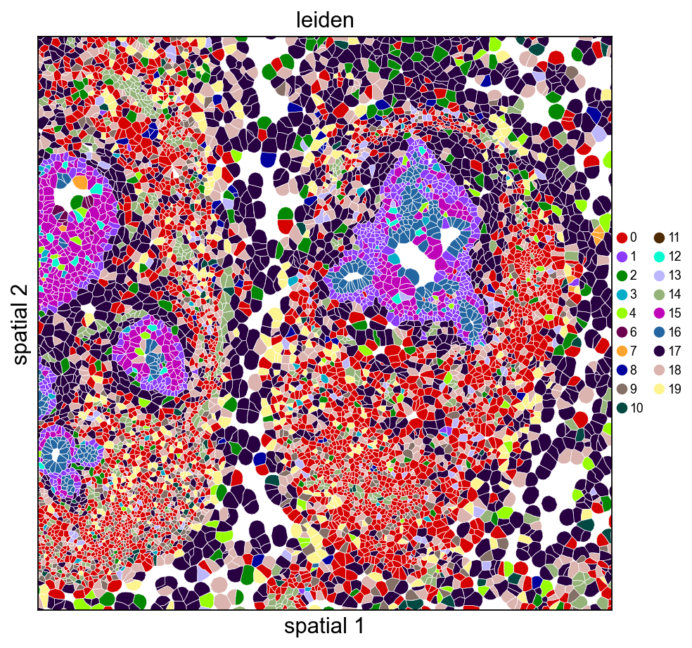
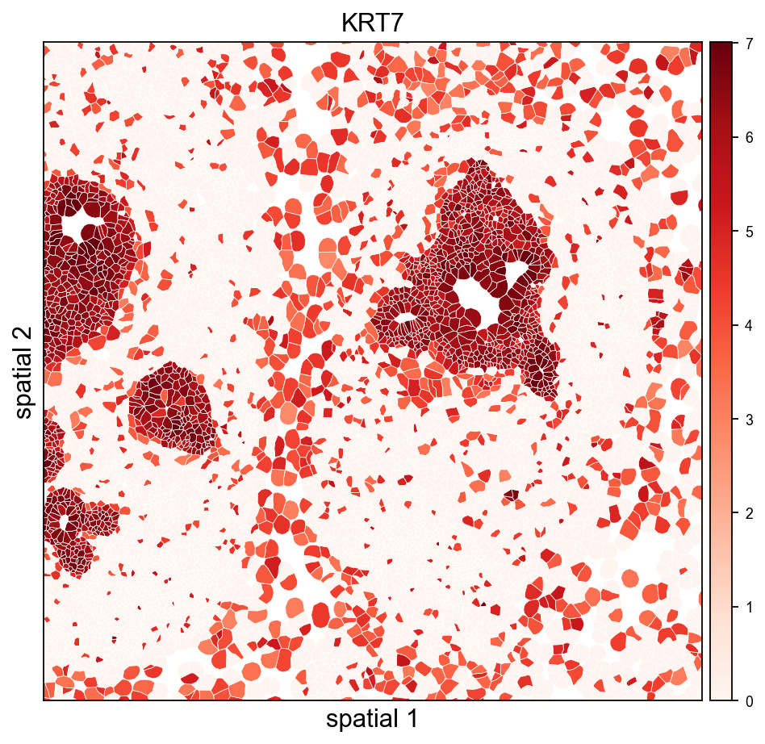
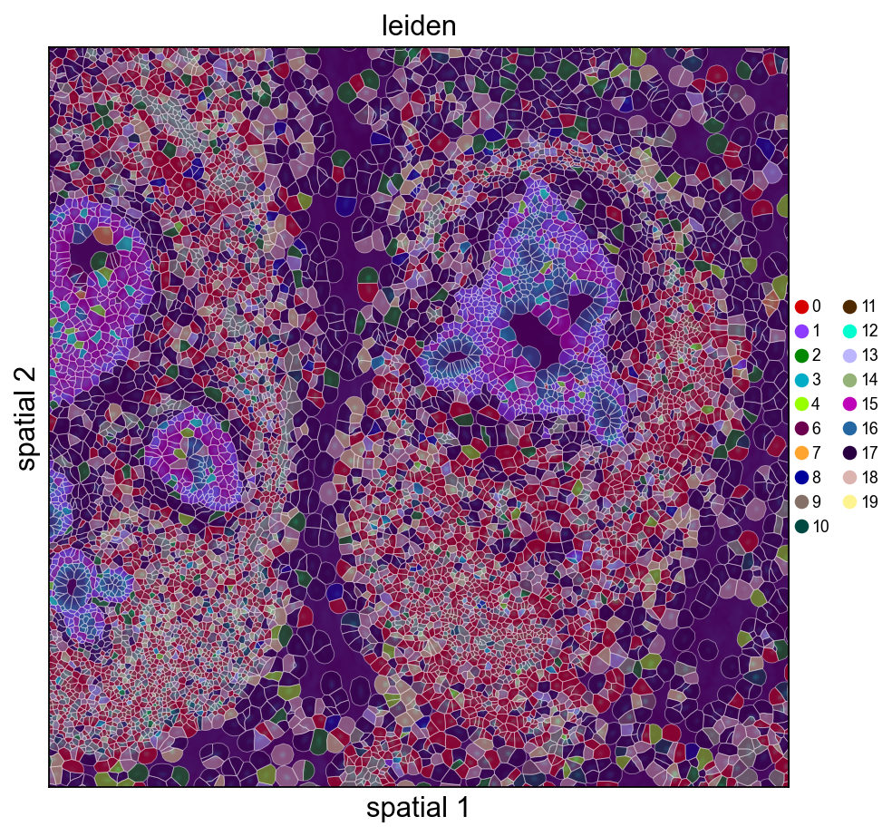
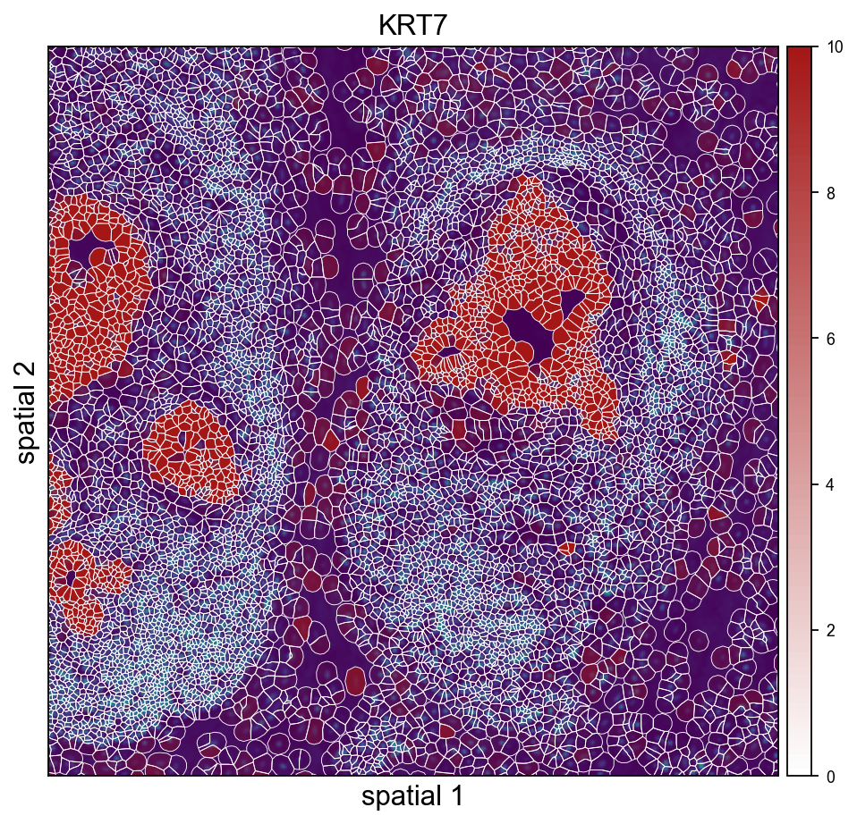

Spatial
Analyze Xenium data
The 10x Genomics Xenium In Situ platform is an image-based *in situ* technology that reports counts of a pre-designed gene panel at single-cell resolution. A single Xenium experiment produces a stitched tissue region in microns, per-cell centroids and polygon boundaries, individual transcript locations, and multi-channel morphology images. It is widely used for tumor microenvironment studies, brain atlasing, and validation of dissociated single-cell data.
This tutorial mirrors the Nanostring CosMx tutorial (t_nanostring_preprocess.ipynb) and is informed by squidpy's Xenium vignette. We use ov.io.read_xenium() and a standard Leiden-based downstream analysis (skipping CAST). Key outputs you will see:
ov.io.read_xenium()parsing the 10xouts/layout into anAnnDatawith spatial coordinates in microns and cell polygon boundaries as WKT strings onobs['geometry']- basic per-cell QC against control probes / codewords
- the standard OmicVerse preprocessing pipeline (
normalize_total→log1p→scale→pca) - k-NN graph + Leiden clustering
- spatial visualization of the clusters over the tissue layout via both
ov.pl.embedding(centroid scatter) andov.pl.spatialseg(polygon overlay)
1. Environment setup
Import omicverse, set the plotting style, and enable auto-reload. ov.style(font_path='Arial') keeps exported figures consistent across platforms.
from pathlib import Path
import numpy as np
import omicverse as ov
ov.style(font_path='Arial')
%load_ext autoreload
%autoreload 2ov.settings.cpu_gpu_mixed_init()2. Download the Xenium dataset
We use the public Xenium FFPE Human Breast Cancer Replicate 1 sample from 10x (≈167k cells, 313 genes, Breast Cancer Tumor Microenvironment panel + 33 custom targets). The full outs bundle is several GB because of the multi-channel morphology OME-TIFFs, but the minimum files for a Leiden analysis with segmentation visualization are only ~40 MB:
cell_feature_matrix.h5— sparse gene × cell counts (≈12 MB)cells.csv.gz— per-cell metadata includingx_centroid,y_centroidin microns (≈8 MB)cell_boundaries.parquet— per-cell polygon vertices forov.pl.spatialseg(≈8 MB)experiment.xenium— run metadata (JSON)
If you also want the H&E / DAPI background overlay, download morphology_focus.ome.tif (≈624 MB) and call ov.io.read_xenium(..., load_image=True).
# !mkdir -p data/xenium_breast_rep1
# BASE='https://cf.10xgenomics.com/samples/xenium/1.0.1/Xenium_FFPE_Human_Breast_Cancer_Rep1'
# !wget -O data/xenium_breast_rep1/cell_feature_matrix.h5 $BASE/Xenium_FFPE_Human_Breast_Cancer_Rep1_cell_feature_matrix.h5
# !wget -O data/xenium_breast_rep1/cells.csv.gz $BASE/Xenium_FFPE_Human_Breast_Cancer_Rep1_cells.csv.gz
# !wget -O data/xenium_breast_rep1/cell_boundaries.parquet $BASE/Xenium_FFPE_Human_Breast_Cancer_Rep1_cell_boundaries.parquet
# !wget -O data/xenium_breast_rep1/experiment.xenium $BASE/Xenium_FFPE_Human_Breast_Cancer_Rep1_experiment.xenium
# Optional — ~624 MB, only needed for a morphology background in ov.pl.spatial:
# !wget -O data/xenium_breast_rep1/morphology_focus.ome.tif $BASE/Xenium_FFPE_Human_Breast_Cancer_Rep1_morphology_focus.ome.tifsample_dir = Path('data') / 'xenium_breast_rep1'
ov.utils.print_tree(sample_dir)3. Read the Xenium dataset
ov.io.read_xenium() handles the 10x outs/ layout:
- reads
cell_feature_matrix.h5via the 10x HDF5 parser - drops non-Gene-Expression features (control probes / codewords) so downstream PCA and HVG don't waste capacity
- merges
cells.csv.gz(orcells.parquet) intoobs - writes cell centroids in microns to
obsm['spatial'] - converts
cell_boundaries.parquetvertex vectors into per-cell WKTPOLYGONstrings onobs['geometry']— the format expected byov.pl.spatialseg - sets
uns['spatial'][library_id]['scalefactors'](tissue_hires_scalef = 1 / pixel_size) so micron coordinates map correctly into image-pixel space when a morphology image is loaded - parses
experiment.xeniumintouns['spatial'][library_id]['metadata']
Pass load_image=False to skip the (large) morphology OME-TIFF, and load_boundaries=False to skip polygon extraction.
adata = ov.io.read_xenium(sample_dir, load_image=False)
adatalibrary_id = next(iter(adata.uns['spatial']))
sf = adata.uns['spatial'][library_id]['scalefactors']
print('library_id :', library_id)
print('spatial range (µm) :',
adata.obsm['spatial'].min(axis=0).tolist(), '->',
adata.obsm['spatial'].max(axis=0).tolist())
print('pixel size (µm/px) :', 1 / sf['tissue_hires_scalef'])
print('mean cell diameter :', round(sf['spot_diameter_fullres'] / sf['tissue_hires_scalef'], 2), 'µm')
print('cells with geometry:', (adata.obs['geometry'] != '').sum())4. Inspect spatial QC
Two quick checks over the tissue layout: total_counts per cell and cell_area (in square microns). For a tumor microenvironment section you typically see counts concentrated on epithelial / tumor tiles and a roughly bimodal area distribution (small immune vs. large epithelial).
import matplotlib.pyplot as plt
fig, axs = plt.subplots(1, 2, figsize=(12, 5))
ov.pl.embedding(
adata, basis='spatial', color='total_counts',
vmax='p99', cmap='Reds', ax=axs[0], show=False, title='total_counts',
)
axs[0].invert_yaxis()
ov.pl.embedding(
adata, basis='spatial', color='cell_area',
vmax='p99', cmap='viridis', ax=axs[1], show=False, title='cell_area (µm²)',
)
axs[1].invert_yaxis()
plt.tight_layout()
5. Cell-level QC
Filter out cells with very low transcript counts — these are usually segmentation artifacts or empty nuclei. A threshold of 10 counts is mild; tune based on the total_counts histogram.
import scipy.sparse as sp
counts = np.asarray(adata.X.sum(axis=1)).ravel() if sp.issparse(adata.X) else adata.X.sum(axis=1)
print(f'cells pre-QC : {adata.n_obs}')
adata = adata[counts >= 10].copy()
print(f'cells post-QC: {adata.n_obs} (>= 10 transcripts/cell)')6. Normalize, log-transform and scale
We use the standard normalize_total + log1p + scale pipeline. Because the panel is small (313 genes), we skip HVG selection and use all genes for PCA.
ov.pp.normalize_total(adata, target_sum=1e4)
ov.pp.log1p(adata)
ov.pp.scale(adata)7. PCA + neighbors + Leiden
Compute the first 50 principal components of the scaled matrix, build a k-NN graph, and run Leiden. For a 164k-cell Xenium section, resolution=0.5 typically gives 10–20 clusters mapping to broad tissue structure. Push higher for finer subtypes, lower for compartments.
ov.pp.pca(adata, layer='scaled', n_pcs=50)
ov.pp.neighbors(
adata, n_neighbors=15,
use_rep='scaled|original|X_pca', n_pcs=50,
)
ov.pp.leiden(adata, resolution=0.5)
print(f"leiden: {adata.obs['leiden'].nunique()} clusters")8. Visualize Leiden clusters on the tissue
Plot the Leiden label and one marker gene over the spatial layout. Xenium centroids are in image-pixel convention (y grows downward); ax.invert_yaxis() lines the plot up with the tissue image you would overlay in step 10.
marker = next((g for g in ['KRT7', 'EPCAM', 'ERBB2', 'ESR1', 'KRT14']
if g in adata.var_names), adata.var_names[0])
fig, axs = plt.subplots(1, 2, figsize=(13, 6))
ov.pl.embedding(
adata, basis='spatial', color='leiden',
palette=ov.pl.palette_112,
legend_fontsize=8, ax=axs[0], show=False, title='Leiden clusters',
)
axs[0].invert_yaxis()
ov.pl.embedding(
adata, basis='spatial', color=marker,
vmax='p99.2', cmap='Reds', ax=axs[1], show=False, title=marker,
)
axs[1].invert_yaxis()
plt.tight_layout()
9. Visualize with cell polygons (ov.pl.spatialseg)
Unlike centroid scatter, ov.pl.spatialseg draws each cell as its actual segmented polygon. This is the right view for inspecting cluster boundaries against tissue morphology and for diagnosing oversegmentation.
On a 160k-cell section rendering every polygon produces a dense figure. To see the segmentation itself we also provide a cropped view (crop_coord=(x0, x1, y0, y1) in microns). Pick a region where tumor and stromal compartments should meet — for this breast sample, coordinates around (2000–3200 µm × 2500–3700 µm) land on a mixed compartment.
Rendering every cell polygon for the full 160k-cell section can take minutes and produce a dense image where individual cells aren't visible. We'll keep the full-section view to ov.pl.embedding (centroid scatter) and use ov.pl.spatialseg only on a cropped region, where the polygons are actually readable.
ov.pl.spatialseg(
adata, color='leiden',
library_id=library_id,
edges_color='white', edges_width=0.3,
alpha=1.0, legend_fontsize=8,
palette=ov.pl.palette_112,
crop_coord=(2000, 3200, 2500, 3700),
figsize=(7, 6),
)
The same view coloured by a tumor-associated marker shows which polygons actually express it — useful for validating that a Leiden cluster and a gene signature agree.
import numpy as np
expr = adata[:, marker].X.toarray().ravel() if hasattr(adata[:, marker].X, 'toarray') else np.asarray(adata[:, marker].X).ravel()
vmax_marker = float(np.percentile(expr[expr > 0], 99)) if (expr > 0).any() else 1.0
ov.pl.spatialseg(
adata, color=marker,
library_id=library_id,
edges_color='white', edges_width=0.3,
alpha=1.0, legend_fontsize=8,
cmap='Reds', vmax=vmax_marker,
crop_coord=(2000, 3200, 2500, 3700),
figsize=(7, 6),
)
10. (Optional) overlay on the morphology image
If you downloaded morphology_focus.ome.tif into sample_dir, re-read with load_image=True and use ov.pl.spatial / ov.pl.spatialseg to overlay labels on the morphology background. read_xenium() sets tissue_hires_scalef = 1 / pixel_size so spot coordinates land in image-pixel space.
adata_img = ov.io.read_xenium(sample_dir, load_image=True)
adata_img.obs['leiden'] = adata.obs['leiden'] # carry over labels
ov.pl.spatialseg(
adata_img, color='leiden', library_id=library_id,
alpha_img=0.5, alpha=0.8,
palette=ov.pl.palette_112,
crop_coord=(2000, 3200, 2500, 3700),
)For large Xenium sections (cm-scale), always prefer crop_coord=(x0, x1, y0, y1) in microns to zoom into a region — rendering every polygon for the full tissue can take minutes.
11. Save the processed object
Persist the analyzed AnnData so you can skip preprocessing next time. The WKT strings in obs['geometry'] round-trip through adata.write() unchanged.
adata.write('data/xenium_breast_rep1_processed.h5ad')#adata=ov.read('data/xenium_breast_rep1_processed.h5ad')12. Cache the loaded AnnData for fast re-reads
Parsing cell_feature_matrix.h5 + cells.csv.gz + cell_boundaries.parquet (including the per-cell WKT polygon construction) takes a few seconds the first time. Pass cache_file= to read_xenium() to write an h5ad snapshot alongside the outs folder — subsequent calls with the same cache_file skip all the parsing and just read the h5ad back, typically ~30× faster.
The cache includes everything: counts, obs/var, spatial coords, polygon WKT strings, image payloads, and experiment metadata. Delete the cache file to force a re-read after updating any of the source files.
import time, os
cache_path = 'data/xenium_breast_rep1_cache.h5ad'
if os.path.exists(cache_path):
os.remove(cache_path) # start fresh to show the timing difference
t0 = time.time()
_ = ov.io.read_xenium(sample_dir, load_image=False, cache_file=cache_path)
t_cold = time.time() - t0
t0 = time.time()
_ = ov.io.read_xenium(sample_dir, cache_file=cache_path)
t_warm = time.time() - t0
print(f'cold (raw parse + cache write): {t_cold:.2f} s')
print(f'warm (cache read) : {t_warm:.2f} s')
print(f'speedup : {t_cold / t_warm:.1f}x')13. Overlay Leiden clusters on the morphology image
When morphology_focus.ome.tif sits next to the cell_feature_matrix.h5, pass load_image=True and ov.pl.spatialseg will render cell polygons on top of the morphology background. The OME-TIFF is a multi-resolution pyramid (8 levels from 25K×35K down to 201×276), so we only read one level: image_max_dim=4096 picks the highest pyramid level whose largest dimension fits under 4096 px (~1611×2213 for this sample, ~7 MB as uint16, <1 s to load). That is the Xenium analogue of Visium's hires.png — no need to touch the 25K×35K full-resolution data.
The loader rescales tissue_hires_scalef to the chosen pyramid level, so micron coordinates land on the downsampled image without any extra math on your side.
# One-time call: loads the image, composes the full AnnData, writes the cache
adata_img = ov.io.read_xenium(
sample_dir,
load_image=True,
image_max_dim=4096,
cache_file='data/xenium_breast_rep1_with_image_cache.h5ad',
)
# Carry Leiden labels from the already-processed adata so we can visualise
# clusters without re-running the pipeline on the image-backed copy.
adata_img = adata_img[adata.obs_names].copy()
adata_img.obs['leiden'] = adata.obs['leiden'].values
img = adata_img.uns['spatial'][library_id]['images']['hires']
sf = adata_img.uns['spatial'][library_id]['scalefactors']
print('image shape :', img.shape, 'dtype:', img.dtype)
print('hires_scalef :', round(sf['tissue_hires_scalef'], 4),
'(micron -> image-pixel)')
print('fullres diameter:', round(sf['spot_diameter_fullres'], 2), 'px')Cropped H&E / DAPI overlay — Leiden on the left, KRT7 on the right. crop_coord is in microns (same convention as the other spatialseg calls above); the loader's rescaled tissue_hires_scalef handles the mapping into image-pixel space for the imshow call.
ov.pl.spatialseg(
adata_img, color='leiden',
library_id=library_id,
edges_color='white', edges_width=0.4,
# alpha=0.45 keeps the DAPI morphology visible through the cluster fills so the
# polygon-to-nucleus alignment stays obvious. Raise closer to 1.0 if you only
# care about cluster assignment and not the background.
alpha=0.45, alpha_img=1.0,
legend_fontsize=8,
palette=ov.pl.palette_112,
crop_coord=(2000, 3200, 2500, 3700),
figsize=(7, 6),
)
ov.pl.spatialseg(
adata_img, color=marker,
library_id=library_id,
edges_color='white', edges_width=0.4,
alpha=0.65, alpha_img=1.0,
legend_fontsize=8,
cmap='Reds', vmax=vmax_marker,
crop_coord=(2000, 3200, 2500, 3700),
figsize=(7, 6),
)
ov.pl.spatialseg(
adata_img, color='KRT7',
library_id=library_id,
edges_color='white', edges_width=0.4,
alpha=0.65, alpha_img=1.0,
legend_fontsize=8,
cmap=ov.pl.create_custom_colormap('#a51616'), vmax=10,
crop_coord=(2000, 3200, 2500, 3700),
figsize=(7, 6),
)
ov.pl.spatialseg(
adata_img, color='KRT7',
library_id=library_id,
edges_color='white', edges_width=0.4,
alpha=0.65, alpha_img=1.0,
legend_fontsize=8,
cmap=ov.pl.create_custom_colormap('#a51616'), vmax=10,
seg_contourpx=1.5,
crop_coord=(2000, 3200, 2500, 3700),
figsize=(7, 6),
)
Quick alignment check — polygon outlines on DAPI
To confirm the morphology image and the cell polygons are correctly registered, render a tight crop with *outlines only* (no fill) over the DAPI background. Every polygon should contain exactly one DAPI-bright nucleus.
# Render polygons directly — gives full control of facecolor='none' so the fills
# don't mask the DAPI (`ov.pl.spatialseg(alpha=0, ...)` ends up skipping the
# collection entirely when alpha is zero).
import matplotlib.pyplot as plt
from matplotlib.patches import Polygon as _MplPoly
from matplotlib.collections import PatchCollection
from shapely import wkt as _wkt
x0u, x1u, y0u, y1u = 2400, 2800, 2900, 3300 # tighter crop (microns)
sf = adata_img.uns['spatial'][library_id]['scalefactors']['tissue_hires_scalef']
xy = adata_img.obsm['spatial']
mask = (xy[:,0] > x0u) & (xy[:,0] < x1u) & (xy[:,1] > y0u) & (xy[:,1] < y1u)
fig, ax = plt.subplots(figsize=(7, 6))
img = adata_img.uns['spatial'][library_id]['images']['hires']
ax.imshow(img, origin='upper', cmap='gray',
vmax=float(np.percentile(img, 99.5)))
patches = []
for i in np.where(mask)[0]:
w = adata_img.obs['geometry'].iloc[i]
if not w: continue
geom = _wkt.loads(w)
if not hasattr(geom, 'exterior'): continue
xs, ys = geom.exterior.xy
pts = np.column_stack((np.array(xs)*sf, np.array(ys)*sf))
patches.append(_MplPoly(pts, closed=True))
ax.add_collection(PatchCollection(
patches, facecolor='none', edgecolor='yellow', linewidth=0.5, alpha=0.9,
))
ax.set_xlim(x0u * sf, x1u * sf)
ax.set_ylim(y1u * sf, y0u * sf) # inverted y (image convention)
ax.set_title(f'alignment check — {len(patches)} cells (yellow) on DAPI')
ax.set_aspect('equal')
plt.show()